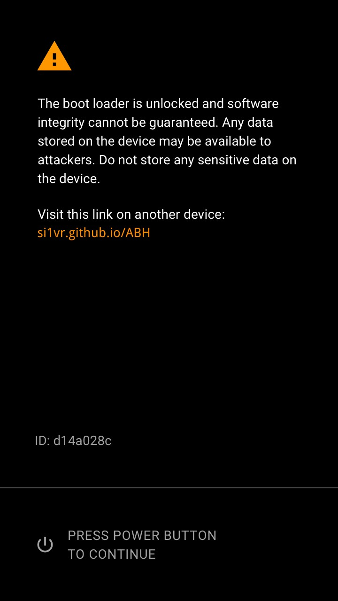

当您开启 Android 设备时，系统会对操作系统进行检查，以确保它可以安全使用。可以安全使用意味着代码均来自可信来源，而且没有遭到更改或损坏。
如果您的操作系统可能存在问题，系统会向您发出一条警告消息，该消息会将您转至此页面 (si1vr.github.io/ABH)。

您可以继续使用您的设备。不过，这样做表示您了解，该设备可能无法正常使用，而且您的数据可能会遭到侵害并面临安全风险。
我们建议您恢复设备的操作系统。如果您使用的是 Pixel 手机或 Nexus 设备，请了解如何使用最新的出厂映像刷写设备。
如果您使用的是 Xiaomi 手机或 Redmi 设备，请了解如何使用最新的固件包刷写设备。